คู่มือฉบับเต็ม
รวมขั้นตอนการติดตั้งทั้งระบบหลัก (Full) 13 ขั้นตอน และ Fast Entry 6 ขั้นตอน ไว้ในหน้าเดียว อ่านและทำตามได้เลยโดยไม่ต้องดาวน์โหลดไฟล์ Word
(ฉบับเข้าใจง่ายสำหรับผู้เริ่มต้น — ไม่ต้องมีพื้นฐานเขียนโปรแกรม)
ระบบบัญชีวัดและ e-Donation "วัดไทยใสใส"
Ver-R2 · พัฒนาด้วย Google Apps Script
เอกสารประกอบไฟล์โค้ด Code.gs และ index.html
ฉบับที่ 1
▸ คำนำ
▸ สิ่งที่ต้องเตรียมก่อนเริ่มติดตั้ง
▸ ส่วนที่ 1 — ทำความรู้จักระบบก่อนเริ่มติดตั้ง
▸ ส่วนที่ 2 — ขั้นตอนการติดตั้ง (13 ขั้นตอน)
▸ ส่วนที่ 3 — คำถามที่พบบ่อย (FAQ)
▸ ส่วนที่ 4 — สิ่งที่ควรทำหลังติดตั้งเสร็จ (ด้านความปลอดภัย)
▸ ภาคผนวก — ข้อมูลอ้างอิงของระบบท่าน
คู่มือฉบับนี้จัดทำขึ้นเพื่อให้วัดหรือหน่วยงานที่สนใจนำ "ระบบบัญชีวัดและ e-Donation" ไปใช้งาน สามารถติดตั้งระบบขึ้นมาใช้เองได้ครบถ้วน แม้จะไม่มีพื้นฐานด้านการเขียนโปรแกรมมาก่อนเลยก็ตาม โดยอาศัยเพียงบัญชี Google ที่มีอยู่แล้ว และไฟล์โค้ด 2 ไฟล์ที่แนบมาพร้อมคู่มือนี้ (Code.gs และ index.html)
เอกสารนี้เขียนในลักษณะ "จับมือทำ" คือมีภาพประกอบกำกับแทบทุกขั้นตอน บอกตำแหน่งที่ต้องกดอย่างชัดเจน เพื่อให้ผู้ที่ไม่เคยใช้ Google Apps Script มาก่อนสามารถทำตามได้สำเร็จโดยไม่ต้องมีผู้เชี่ยวชาญคอยช่วย
ใช้เวลาในการติดตั้งทั้งหมดประมาณ 20–30 นาที หากทำตามลำดับขั้นตอนอย่างครบถ้วนโดยไม่ข้ามขั้นตอนใดขั้นตอนหนึ่ง
บัญชี Google (Gmail) ที่จะใช้เป็นเจ้าของระบบ — แนะนำให้เป็นบัญชีของวัดหรือผู้ดูแลระบบหลัก ไม่ใช่บัญชีส่วนตัวของเจ้าหน้าที่ทั่วไป
ไฟล์ Code.gs และ index.html — แนบมาพร้อมคู่มือฉบับนี้แล้ว
เบราว์เซอร์ Chrome และการเชื่อมต่ออินเทอร์เน็ต
เวลาว่างต่อเนื่องประมาณ 30 นาที (แนะนำให้ทำให้จบในรอบเดียว ไม่ควรทำค้างไว้)
ก่อนลงมือติดตั้ง ควรเข้าใจภาพรวมคร่าวๆ ก่อนว่าระบบนี้ประกอบด้วยอะไรบ้าง เพื่อให้เห็นภาพว่าแต่ละขั้นตอนที่กำลังจะทำต่อไปนี้ กำลังสร้างส่วนไหนของระบบ
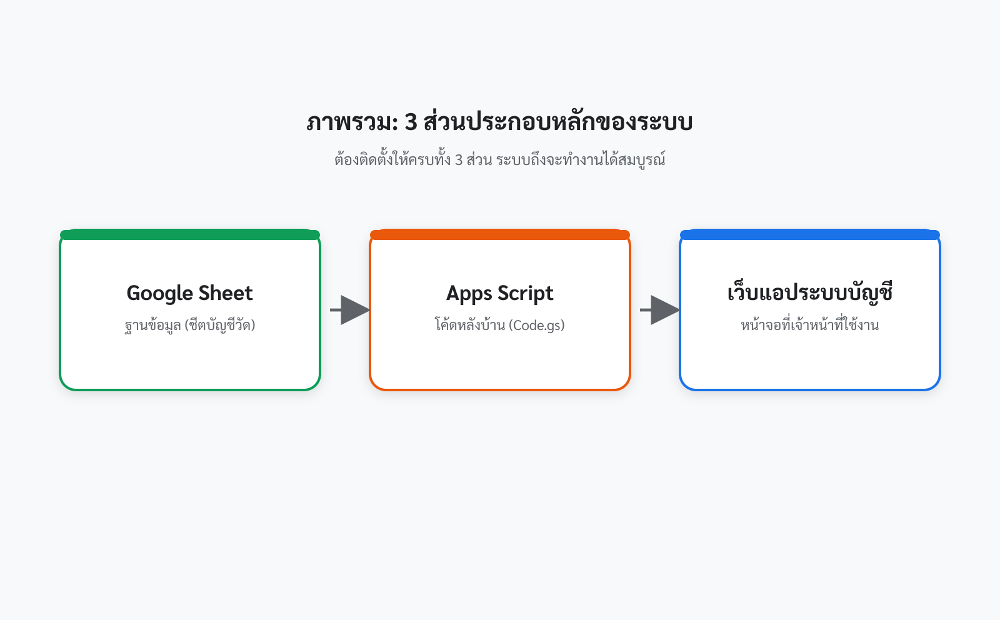
ระบบนี้ทำงานโดยอาศัย 3 ส่วนประกอบที่เชื่อมต่อกัน:
ข่าวดีคือ ทั้ง 3 ส่วนนี้ทำงานอยู่บน Google ทั้งหมด — ไม่ต้องเช่า Hosting ไม่ต้องติดตั้งโปรแกรมอะไรเพิ่มบนเครื่อง และไม่มีค่าใช้จ่ายใดๆ ทั้งสิ้น
สร้าง Google Sheet ใหม่ 1 ไฟล์ (หรือใช้ไฟล์ชีตที่เตรียมไว้สำหรับวัดของท่าน) ตั้งชื่อไฟล์ตามที่ต้องการ เช่น "บัญชีวัด[ชื่อวัด]"
เปิดไฟล์ชีตนั้นขึ้นมา แล้วไปที่เมนู Extensions (ส่วนขยาย) ที่แถบเมนูด้านบน แล้วเลือก Apps Script
ระบบจะเปิดแท็บใหม่ขึ้นมาเป็นหน้าต่าง Apps Script Editor ซึ่งผูกติดกับชีตไฟล์นี้โดยอัตโนมัติ
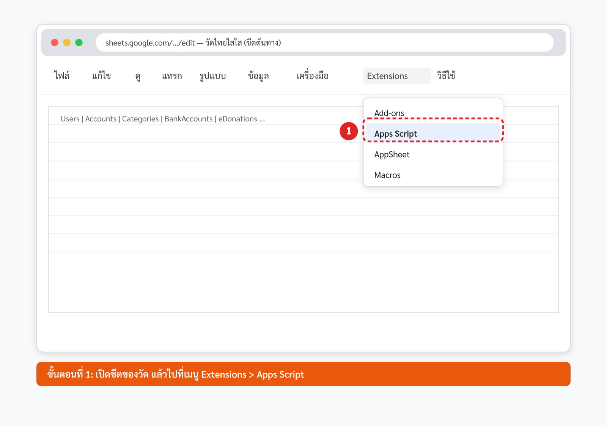
สำคัญ: ต้องเปิด Apps Script จากเมนูภายในชีตไฟล์นี้เท่านั้น (ไม่ใช่สร้างโปรเจกต์ Apps Script แยกต่างหากจากที่อื่น) เพื่อให้แน่ใจว่าเชื่อมกับชีตไฟล์ที่ถูกต้อง
เมื่อเปิด Apps Script Editor ขึ้นมาครั้งแรก จะเห็นไฟล์ชื่อ Code.gs พร้อมโค้ดตัวอย่างสั้นๆ อยู่แล้ว (function myFunction() {})
คลิกเลือกโค้ดทั้งหมดในไฟล์นั้น (กด Ctrl+A บน Windows หรือ Cmd+A บน Mac) แล้วลบทิ้งให้หมด ให้พื้นที่โค้ดว่างเปล่า
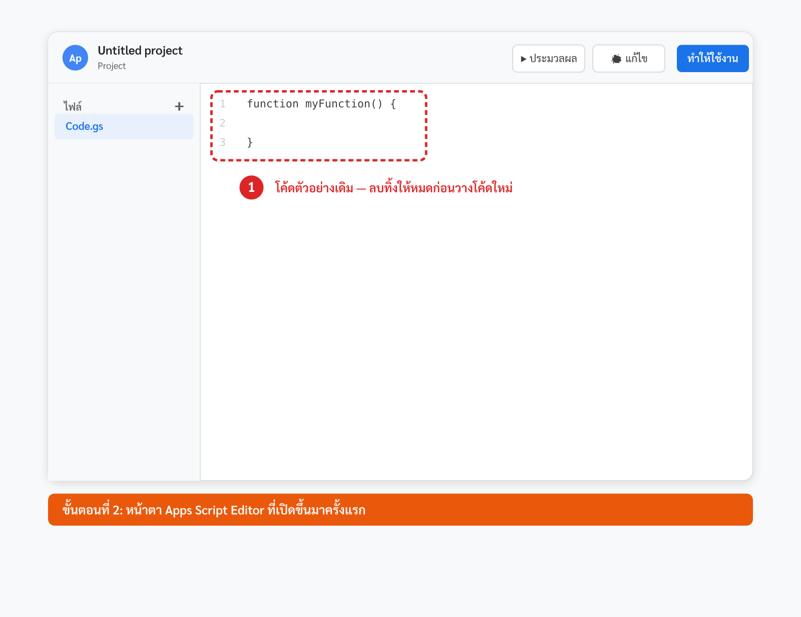
เปิดไฟล์ Code.gs ที่แนบมาพร้อมคู่มือนี้ด้วยโปรแกรมแก้ไขข้อความ (เช่น Notepad หรือ TextEdit) แล้วคัดลอกเนื้อหาทั้งหมด
กลับมาที่ Apps Script Editor วางเนื้อหาทั้งหมดลงในพื้นที่ว่างที่เพิ่งลบไป
ตรวจสอบว่าโค้ดขึ้นต้นด้วยคอมเมนต์ "// ==================== Configuration & Constants ====================" และลงท้ายด้วยฟังก์ชัน deleteAuditReport — หากครบถือว่าวางถูกต้อง
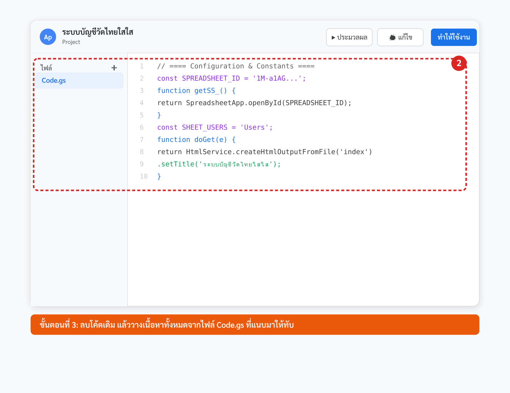
ที่แถบด้านซ้ายของ Editor ตรงหัวข้อ "ไฟล์" ให้กดเครื่องหมาย + แล้วเลือก HTML
เมื่อระบบถามชื่อไฟล์ ให้พิมพ์ว่า index แล้วกด Enter (ห้ามใส่ .html ต่อท้าย ระบบเติมให้เองอัตโนมัติ)
ลบโค้ด HTML ตัวอย่างเดิมในไฟล์ index ที่เพิ่งสร้างออกให้หมด แล้ววางเนื้อหาทั้งหมดจากไฟล์ index.html ที่แนบมาแทน (ทำเช่นเดียวกับขั้นตอนที่ 3
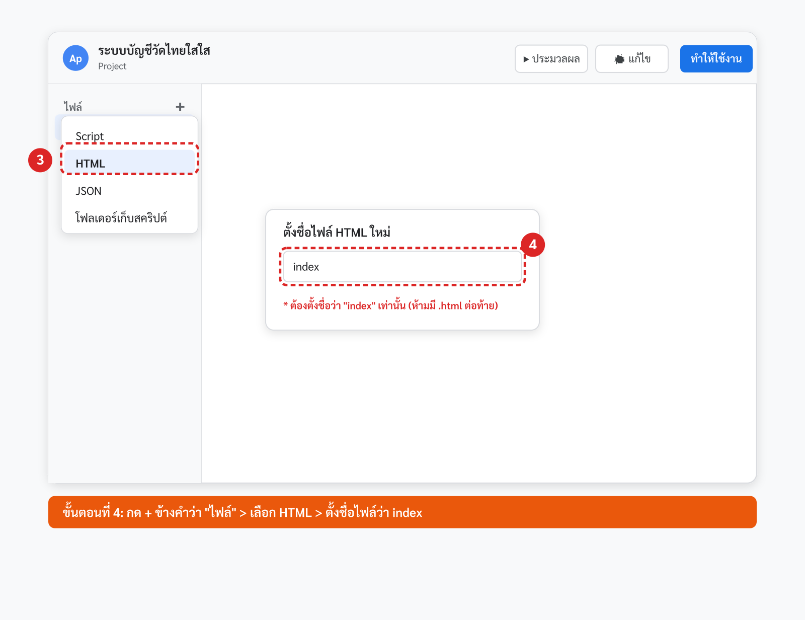
ชื่อไฟล์ต้องเป็น index เป๊ะๆ เท่านั้น เพราะโค้ดฝั่ง Code.gs อ้างอิงชื่อไฟล์นี้ตรงๆ ในฟังก์ชัน doGet — ถ้าตั้งชื่ออื่นระบบจะหาไฟล์หน้าเว็บไม่เจอ
สลับไปที่แท็บชีต Google Sheets ที่เปิดไว้ (ไฟล์ที่สร้างในขั้นตอนที่ 1) แล้วดูที่ URL ด้านบนเบราว์เซอร์
คัดลอกส่วนที่อยู่ระหว่าง /d/ กับ /edit ซึ่งเป็นชุดตัวอักษร-ตัวเลขยาวๆ นี่คือ "Spreadsheet ID" เฉพาะของชีตไฟล์นี้
กลับไปที่ไฟล์ Code.gs ในหน้า Apps Script Editor เลื่อนขึ้นไปบรรทัดบนสุดที่เขียนว่า const SPREADSHEET_ID = '...'; แล้วนำ ID ที่คัดลอกมาวางแทนที่ข้อความตัวอย่างเดิมระหว่างเครื่องหมายคำพูดเดี่ยว
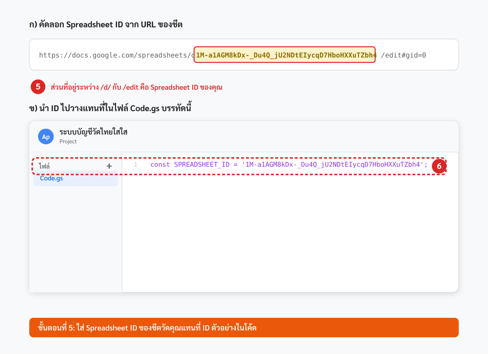
ขั้นตอนนี้สำคัญที่สุดขั้นตอนหนึ่ง — ถ้าใส่ ID ผิดหรือลืมใส่ ระบบจะมองไม่เห็นชีตข้อมูลของท่าน และจะทำให้ Login เข้าระบบไม่ได้ในภายหลัง แม้จะใส่รหัสผ่านถูกต้องก็ตาม
กดปุ่ม Ctrl+S (หรือ Cmd+S) เพื่อบันทึกโค้ดทั้งสองไฟล์ก่อน
กดปุ่มสีน้ำเงิน "ทำให้ใช้งาน" (Deploy) มุมขวาบนของหน้าจอ
เลือก "ทำให้ใช้งานใหม่" (New deployment) จากเมนูที่ปรากฏขึ้นมา
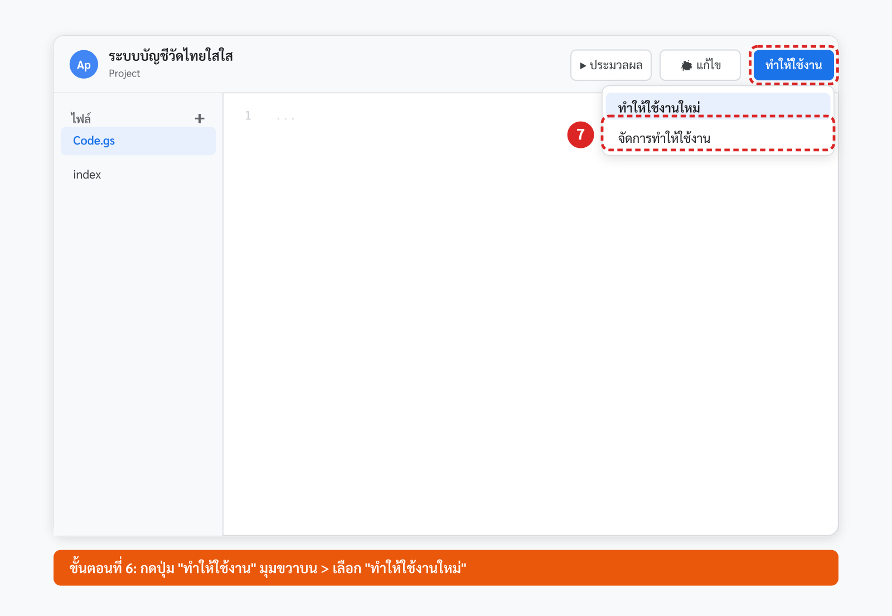
กดไอคอนรูปเฟือง (⚙) ข้างคำว่า "เลือกประเภท" แล้วเลือก เว็บแอป (Web app)
ที่ช่อง "ปฏิบัติการในนามของ" (Execute as) ให้เลือก ฉัน (Me) — เพื่อให้สคริปต์ทำงานด้วยสิทธิ์ของท่าน ไม่ใช่สิทธิ์ของผู้เข้าชม
ที่ช่อง "ผู้ที่มีสิทธิ์เข้าถึง" (Who has access) ให้เลือก ทุกคน (Anyone) — เพื่อให้เจ้าหน้าที่วัดทุกคนเปิดเว็บแอปได้โดยไม่ต้องขอสิทธิ์ Google Sheet โดยตรง
กดปุ่ม "ทำให้ใช้งาน" (Deploy) สีน้ำเงิน
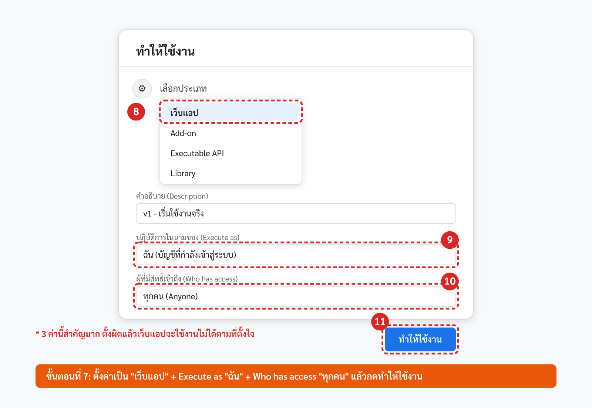
ตั้งค่า 3 ช่องนี้ผิดแล้วเว็บแอปจะใช้งานไม่ได้ตามที่ตั้งใจ — โดยเฉพาะ "Who has access" หากเลือกผิดเป็นแบบจำกัดเฉพาะบัญชีในองค์กร เจ้าหน้าที่ทั่วไปจะเปิดเว็บแอปไม่ได้เลย
เมื่อกด Deploy ครั้งแรก Google จะขึ้นหน้าต่างขอให้ยืนยันสิทธิ์ก่อนเสมอ เพราะเป็นสคริปต์ที่ท่านเขียน/นำมาใช้เอง ไม่ใช่แอปที่ผ่านการตรวจสอบจาก Google Play หรือ Marketplace
ให้เลือกบัญชี Google ที่ต้องการใช้เป็นเจ้าของระบบ
จะเห็นข้อความเตือนว่า "แอปนี้ยังไม่ได้รับการยืนยัน" — ให้กด ขั้นสูง (Advanced) จากนั้นกดลิงก์ "ไปที่ [ชื่อโปรเจกต์] (ไม่ปลอดภัย)" ที่ปรากฏขึ้นมา
กด อนุญาต (Allow) ในหน้าถัดไปเพื่อยืนยันสิทธิ์ให้สคริปต์เข้าถึง Google Sheet ได้
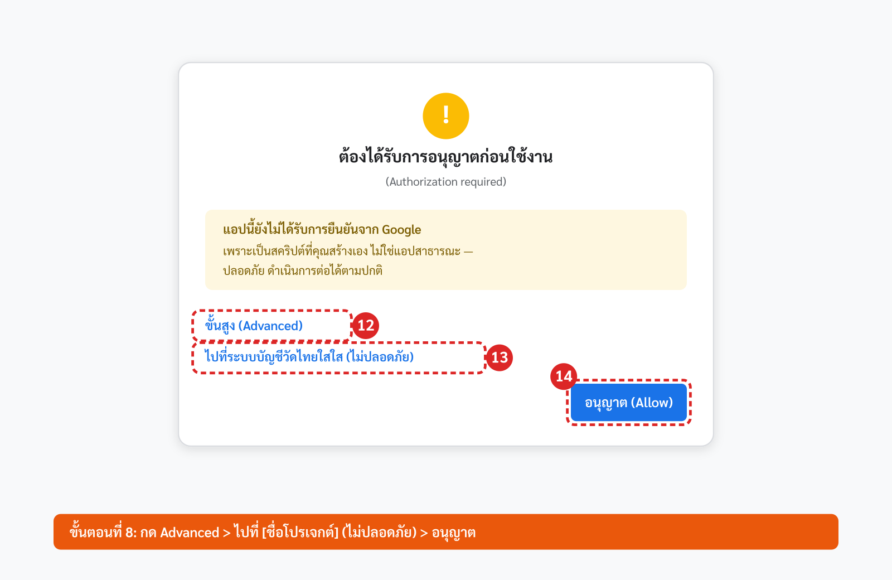
คำเตือน "ไม่ปลอดภัย" ที่ Google แสดง เป็นข้อความมาตรฐานสำหรับสคริปต์ทุกตัวที่ยังไม่ได้ยื่นขอตรวจสอบจาก Google (ซึ่งมีไว้สำหรับแอปสาธารณะขนาดใหญ่เท่านั้น) ไม่ได้แปลว่าโค้ดนี้เป็นอันตราย ท่านสามารถดำเนินการต่อได้ตามปกติเพราะเป็นสคริปต์ที่ท่านติดตั้งเอง
หลังกด Allow ระบบจะพาท่านกลับมาที่หน้าต่าง Deploy พร้อมแสดง "URL ของเว็บแอป" ให้
กดปุ่ม "คัดลอก" ข้าง URL แล้วบันทึกเก็บไว้ในที่ที่หาง่าย เช่น บันทึกลง Bookmark ของเบราว์เซอร์ หรือส่งเก็บไว้ใน LINE ของตนเอง
URL นี้คือลิงก์ที่จะแจกจ่ายให้เจ้าหน้าที่บัญชี ผู้ตรวจสอบ และผู้ดูแลระบบของวัดใช้เข้าสู่ระบบต่อไป
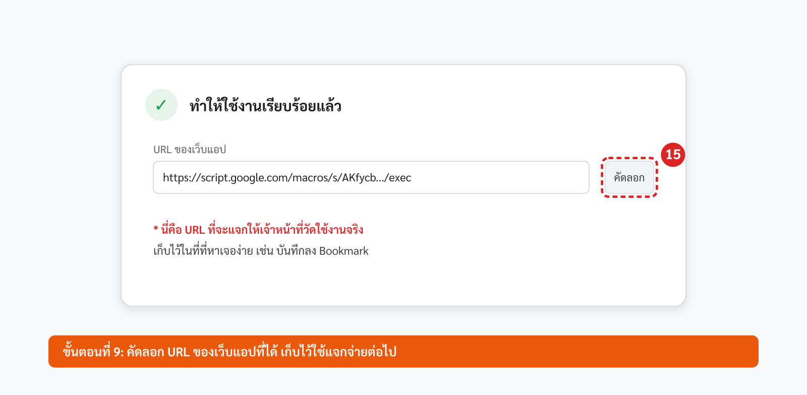
กลับไปที่หน้าต่าง Apps Script Editor เลือกไฟล์ Code.gs
ที่แถบด้านบน จะมีช่องเลือกฟังก์ชัน (dropdown) อยู่ข้างปุ่ม "ประมวลผล" ให้เลือกฟังก์ชันชื่อ setup_
กดปุ่ม ▶ ประมวลผล (Run) แล้วรอสักครู่
ตรวจผลลัพธ์ที่แถบ Execution log ด้านล่าง หากขึ้นข้อความ "Setup & Repair Complete: Ready to use" แสดงว่าสำเร็จ ระบบได้สร้างชีตข้อมูลเริ่มต้นทั้งหมด (Users, Accounts, Categories ฯลฯ) ให้เรียบร้อยแล้ว
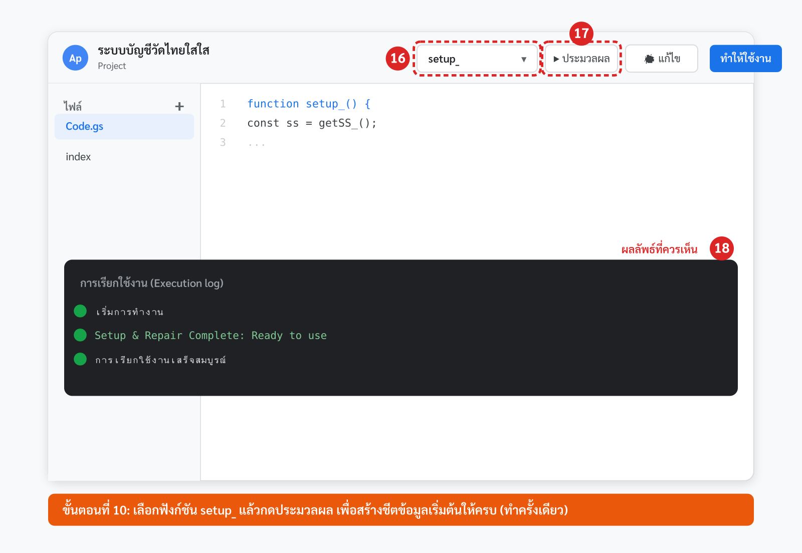
ขั้นตอนนี้ทำเพียงครั้งเดียวตอนติดตั้งระบบครั้งแรกเท่านั้น ปลอดภัยหากบังเอิญกดรันซ้ำ เพราะระบบจะตรวจสอบก่อนว่ามีชีตอยู่แล้วหรือยัง จะไม่สร้างทับข้อมูลเดิม
เปิด URL เว็บแอปที่คัดลอกไว้ในขั้นตอนที่ 9 ขึ้นมาในแท็บใหม่
จะเห็นหน้าเว็บสาธารณะของวัดก่อน ให้กดปุ่ม "เจ้าหน้าที่" มุมขวาบนเพื่อไปหน้าเข้าสู่ระบบ
ป้อน Username: admin และ Password: admin1234 (บัญชีเริ่มต้นที่ระบบสร้างให้อัตโนมัติจากขั้นตอนที่ 10) แล้วกด เข้าสู่ระบบ
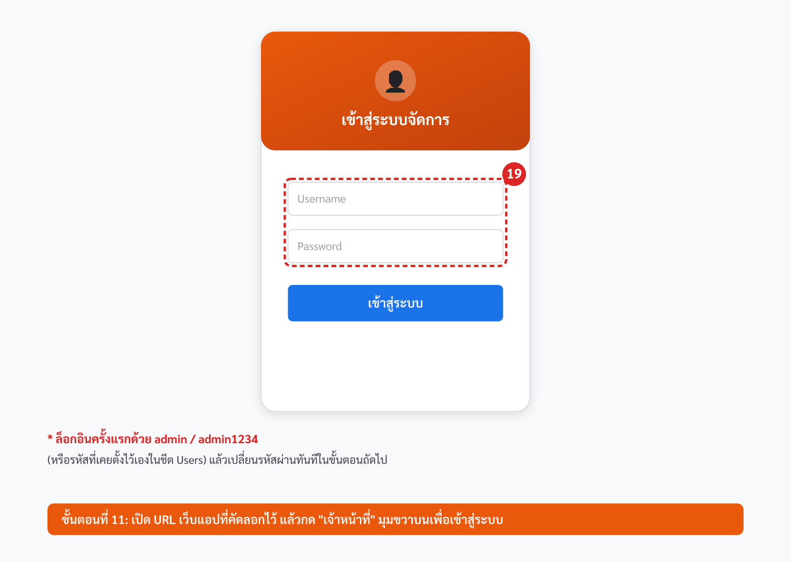
บัญชี admin/admin1234 เป็นรหัสผ่านเริ่มต้นที่ทุกคนที่เคยติดตั้งระบบนี้รู้ — ห้ามใช้ต่อในระยะยาวเด็ดขาด ให้เปลี่ยนทันทีในขั้นตอนถัดไป
หลังเข้าสู่ระบบสำเร็จ ไปที่เมนู "จัดการผู้ใช้งาน" ทางแถบด้านซ้าย
กดไอคอนดินสอ (แก้ไข) ที่แถวของบัญชี admin
ในช่อง "ตั้งรหัสผ่านใหม่" ให้พิมพ์รหัสผ่านใหม่ที่คาดเดายาก (ควรมีทั้งตัวอักษรพิมพ์ใหญ่-เล็ก ตัวเลข และสัญลักษณ์ ความยาวอย่างน้อย 10 ตัวอักษร) แล้วกดบันทึก
ทำซ้ำขั้นตอนนี้กับบัญชี user และ auditor ตัวอย่างที่ระบบสร้างไว้ให้ด้วย หรือลบบัญชีตัวอย่างเหล่านั้นทิ้งแล้วสร้างบัญชีจริงของเจ้าหน้าที่แต่ละคนขึ้นมาแทน
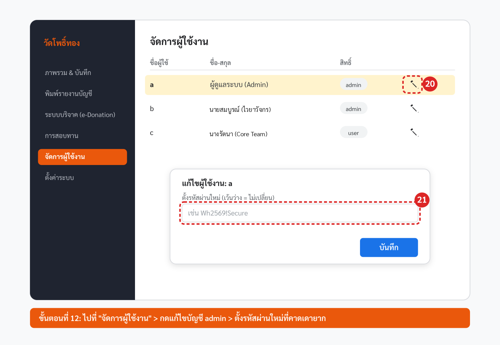
ไปที่เมนู "ตั้งค่าระบบ" ทางแถบด้านซ้าย (เมนูนี้มีเฉพาะบัญชี admin เท่านั้นที่มองเห็น)
กรอกข้อมูล ชื่อวัด ตำบล อำเภอ จังหวัด ชื่อเจ้าอาวาส และเบอร์โทรติดต่อ ให้ครบถ้วน ข้อมูลเหล่านี้จะถูกนำไปแสดงในรายงานบัญชีและใบอนุโมทนาบัตรที่พิมพ์ออกมา
กด บันทึกข้อมูล
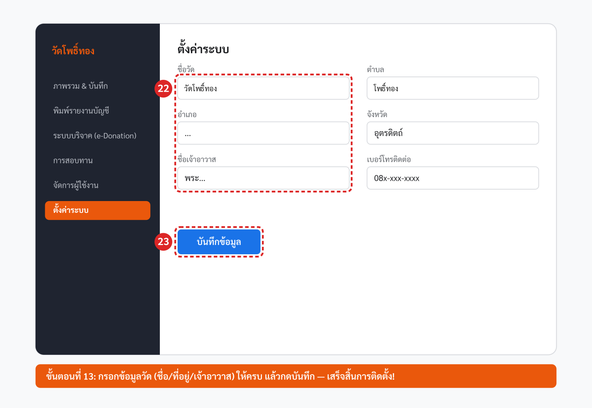
ถึงขั้นตอนนี้ ถือว่าการติดตั้งระบบเสร็จสมบูรณ์แล้ว! ท่านสามารถเริ่มเพิ่มบัญชีธนาคาร หมวดหมู่รายรับ-รายจ่าย และบันทึกรายการบัญชีจริงได้ทันที
ถาม: ล็อกอินไม่ได้ ขึ้นว่า "ชื่อผู้ใช้หรือรหัสผ่านไม่ถูกต้อง" ทั้งที่มั่นใจว่ารหัสถูก ทำอย่างไร?
ตอบ: สาเหตุที่พบบ่อยที่สุดคือยังไม่ได้ใส่ Spreadsheet ID ที่ถูกต้องในโค้ด (ขั้นตอนที่ 5) ทำให้สคริปต์มองไม่เห็นชีตที่มีบัญชีผู้ใช้งานอยู่จริง
ให้กลับไปตรวจสอบขั้นตอนที่ 5 อีกครั้งว่าใส่ Spreadsheet ID ถูกต้องหรือไม่ จากนั้นทำขั้นตอนที่ 6-7 ซ้ำ (Deploy เวอร์ชันใหม่) แล้วลองเข้าสู่ระบบอีกครั้ง
ถาม: แก้ไขโค้ดแล้ว แต่เปิดเว็บแอปแล้วยังเหมือนเดิม ไม่มีอะไรเปลี่ยนแปลง?
ตอบ: ต้อง Deploy เวอร์ชันใหม่ทุกครั้งหลังแก้โค้ด การกดบันทึก (Ctrl+S) เพียงอย่างเดียวจะไม่ทำให้ URL เว็บแอปที่แจกจ่ายไปแล้วเห็นโค้ดล่าสุด
วิธีทำ: กด ทำให้ใช้งาน > จัดการทำให้ใช้งาน (Manage deployments) > กดไอคอนดินสอ (แก้ไข) ที่ deployment เดิม > เปลี่ยนช่อง Version เป็น New version > กด Deploy
ถาม: มีคนพิมพ์ข้อมูลผู้ใช้งานลงในชีต Users โดยตรง (ไม่ผ่านหน้าเว็บแอป) แล้วบัญชีนั้นล็อกอินไม่ได้?
ตอบ: ระบบเก็บรหัสผ่านแบบเข้ารหัส (hash) เสมอ หากมีคนพิมพ์รหัสผ่านเป็นตัวอักษรธรรมดาลงในชีตตรงๆ ระบบจะเทียบรหัสไม่ตรงกัน
ให้ผู้ดูแลระบบเปิด Apps Script Editor เลือกฟังก์ชัน fixPlaintextPasswordsOnce_ จากช่อง dropdown เลือกฟังก์ชัน แล้วกด Run หนึ่งครั้ง ระบบจะตรวจและแปลงรหัสผ่านที่เป็นตัวอักษรธรรมดาทุกบัญชีในชีตให้เป็นแบบเข้ารหัสที่ถูกต้องอัตโนมัติ โดยยังคงใช้รหัสผ่านเดิมที่เคยพิมพ์ไว้ได้ตามปกติ
ถาม: ลืมรหัสผ่านของบัญชี admin ทำอย่างไร?
ตอบ: ให้ผู้ที่เข้าถึง Apps Script Editor ได้ ไปที่หน้าชีต Users แล้วพิมพ์รหัสผ่านใหม่ที่ต้องการลงในคอลัมน์ password ของแถวบัญชีนั้นโดยตรง (เป็นตัวอักษรธรรมดาได้)
จากนั้นรันฟังก์ชัน fixPlaintextPasswordsOnce_ ตามวิธีในคำถามก่อนหน้า เพื่อให้ระบบเข้ารหัสรหัสผ่านใหม่นี้ให้ถูกต้อง แล้วจึงนำรหัสผ่านใหม่ไปเข้าสู่ระบบได้
ถาม: ต้องรันฟังก์ชัน setup_ กี่ครั้ง รันซ้ำแล้วข้อมูลจะหายไหม?
ตอบ: รันเพียงครั้งเดียวตอนติดตั้งระบบครั้งแรกก็เพียงพอ แต่หากบังเอิญรันซ้ำก็ปลอดภัย ไม่ทำให้ข้อมูลที่มีอยู่แล้วหายหรือถูกเขียนทับ เพราะฟังก์ชันจะตรวจสอบก่อนเสมอว่าแต่ละชีตมีอยู่แล้วหรือยัง
ถาม: ควรให้ใครเข้าถึงตัว Google Sheet และหน้า Apps Script Editor ได้บ้าง?
ตอบ: จำกัดเฉพาะผู้ดูแลระบบเท่านั้น (ปกติคือ 1-2 คน) เจ้าหน้าที่บัญชีและผู้ตรวจสอบทั่วไปควรเข้าใช้งานผ่าน URL เว็บแอปเท่านั้น ไม่จำเป็นต้องมีสิทธิ์เข้าถึงตัวไฟล์ Google Sheet โดยตรง
สำคัญมาก: อย่าตั้งค่าแชร์ (Share) ของไฟล์ Google Sheet เป็น "ทุกคนที่มีลิงก์" เพราะจะทำให้ใครก็ตามที่ได้ลิงก์ไฟล์ชีตไป เปิดดูข้อมูลทั้งหมดได้ตรงๆ รวมถึงรหัสผ่าน (แบบเข้ารหัส) และเลขบัตรประชาชนของผู้บริจาค โดยไม่ต้องผ่านการเข้าสู่ระบบของเว็บแอปเลย
ก่อนเริ่มใช้งานจริงกับข้อมูลบัญชีและผู้บริจาคจริง แนะนำให้ตรวจสอบรายการต่อไปนี้ให้ครบทุกข้อ:
เปลี่ยนรหัสผ่านบัญชี admin/user/auditor ตัวอย่างทั้งหมดจากค่าเริ่มต้น เป็นรหัสผ่านที่คาดเดายาก (ขั้นตอนที่ 12)
ตรวจสอบสิทธิ์การแชร์ (Share) ของไฟล์ Google Sheet ว่าไม่ได้ตั้งเป็น "ทุกคนที่มีลิงก์เข้าถึงได้" — ให้จำกัดเฉพาะบุคคลที่ระบุเท่านั้น
มอบ URL เว็บแอปเฉพาะให้เจ้าหน้าที่ที่เกี่ยวข้องเท่านั้น ไม่ควรเผยแพร่ในที่สาธารณะ (แยกจากหน้าเว็บสาธารณะที่ตั้งใจให้ทุกคนดูได้)
สำรองข้อมูลชีตเป็นระยะ เช่น ทุกสิ้นเดือน ผ่านเมนู File > Make a copy หรือ Download เป็น Excel เก็บไว้
หากมีเจ้าหน้าที่ลาออกหรือเปลี่ยนหน้าที่ ให้ลบหรือปิดการใช้งานบัญชีของบุคคลนั้นทันทีผ่านหน้า "จัดการผู้ใช้งาน"
กรอกข้อมูลต่อไปนี้เก็บไว้ เพื่อความสะดวกในการอ้างอิงหรือแจ้งผู้ดูแลระบบในอนาคต:
ชื่อวัด / หน่วยงาน: ______________________________________________
Spreadsheet ID: ______________________________________________
URL เว็บแอป: ______________________________________________
ผู้ดูแลระบบ (ชื่อ-เบอร์ติดต่อ): ______________________________________________
วันที่ติดตั้ง: ______________________________________________
คู่มือการติดตั้ง Fast Entry
(เครื่องมือบันทึกบัญชีฉบับเร็ว สำหรับมือถือ)
ระบบบัญชีวัดและ e-Donation "วัดไทยใสใส"
Fast Entry Ver-1
เอกสารประกอบไฟล์ Fast-Code.gs และ Fast-index.html
▸ คำนำ
▸ สิ่งที่ต้องเตรียมก่อนเริ่มติดตั้ง
▸ ส่วนที่ 1 — Fast Entry คืออะไร
▸ ส่วนที่ 2 — ขั้นตอนการติดตั้ง (6 ขั้นตอน)
▸ คำถามที่พบบ่อย
▸ ภาคผนวก
"Fast Entry" คือเว็บแอปตัวที่ 2 ที่แยกออกมาจากระบบบัญชีวัดหลัก ออกแบบมาให้เบา เปิดเร็ว และใช้งานสะดวกบนหน้าจอมือถือ เหมาะสำหรับบันทึกรายรับ-รายจ่ายและขออนุโมทนาบัตร (นำส่งข้อมูลเข้าระบบ e-Donation)ระหว่างวันอย่างรวดเร็ว โดยไม่ต้องเปิดระบบหลักที่มีเมนูครบทุกอย่างซึ่งอาจไม่สะดวกบนจอเล็ก
Fast Entry ไม่ใช่ระบบแยกต่างหาก แต่เป็น "ประตูอีกบาน" ที่เชื่อมเข้าสู่ฐานข้อมูล (Google Sheet) เดียวกับระบบหลักเป๊ะๆ ข้อมูลที่บันทึกจากเครื่องมือไหนก็ตามจะเห็นตรงกันทันที และใช้บัญชีผู้ใช้งานชุดเดียวกัน ไม่ต้องสร้างใหม่
ติดตั้งระบบหลัก "วัดไทยใสใส" เสร็จเรียบร้อยแล้ว และมีบัญชีผู้ใช้งานอยู่แล้วอย่างน้อย 1 บัญชี
ทราบ Spreadsheet ID ของระบบหลัก (ดูได้จากไฟล์ Code.gs ของระบบหลัก บรรทัด SPREADSHEET_ID)
ไฟล์ Fast-Code.gs และ Fast-index.html — แนบมาพร้อมคู่มือนี้แล้ว
บัญชี Google เดียวกับที่ใช้ติดตั้งระบบหลัก (แนะนำ เพื่อความสะดวกในการจัดการ)
เวลาว่างประมาณ 15 นาที (เร็วกว่าติดตั้งระบบหลัก เพราะไม่ต้องสร้างฐานข้อมูลใหม่)
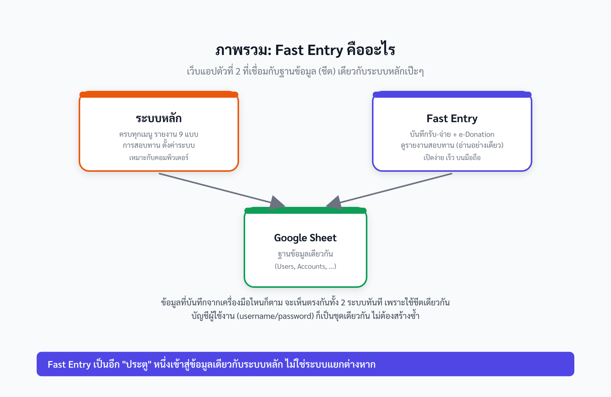
เหตุผลที่แยก Fast Entry ออกมาเป็นอีกเว็บแอปหนึ่ง แทนที่จะใช้ระบบหลักบนมือถือไปเลย:
ส่วนงานที่ทำไม่บ่อย เช่น พิมพ์รายงาน ตั้งค่าระบบ อนุมัติ/ตีกลับรายการ ยังคงต้องทำผ่านระบบหลัก (เหมาะกับหน้าจอคอมพิวเตอร์ที่ใหญ่กว่า) — อธิบายรายละเอียดไว้ในคู่มือการใช้งาน Fast Entry อีกเล่มหนึ่ง
เปิด Google Drive (drive.google.com) ด้วยบัญชีเดียวกับที่ใช้ติดตั้งระบบหลัก
กดปุ่ม + New มุมซ้ายบน แล้วเลือก อื่นๆ (More) > Google Apps Script
ระบบจะเปิดหน้าต่าง Apps Script Editor โปรเจกต์ใหม่ขึ้นมา
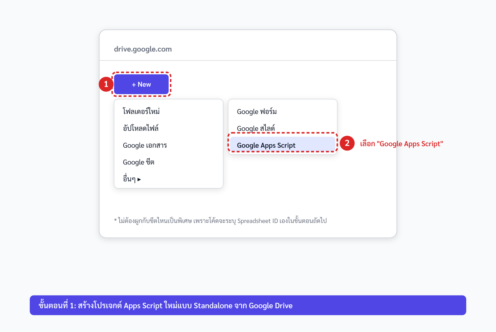
ไม่จำเป็นต้องสร้างจากภายในชีตเหมือนตอนติดตั้งระบบหลัก เพราะโค้ด Fast Entry ระบุ Spreadsheet ID ไว้ในตัวเองอยู่แล้ว ไม่ได้อาศัยการผูกไฟล์ (binding)
ลบโค้ดตัวอย่างเดิมในไฟล์ Code.gs ให้หมด (เลือกทั้งหมดด้วย Ctrl+A หรือ Cmd+A แล้วลบ)
เปิดไฟล์ Fast-Code.gs ที่แนบมาพร้อมคู่มือนี้ คัดลอกเนื้อหาทั้งหมด แล้ววางแทนที่
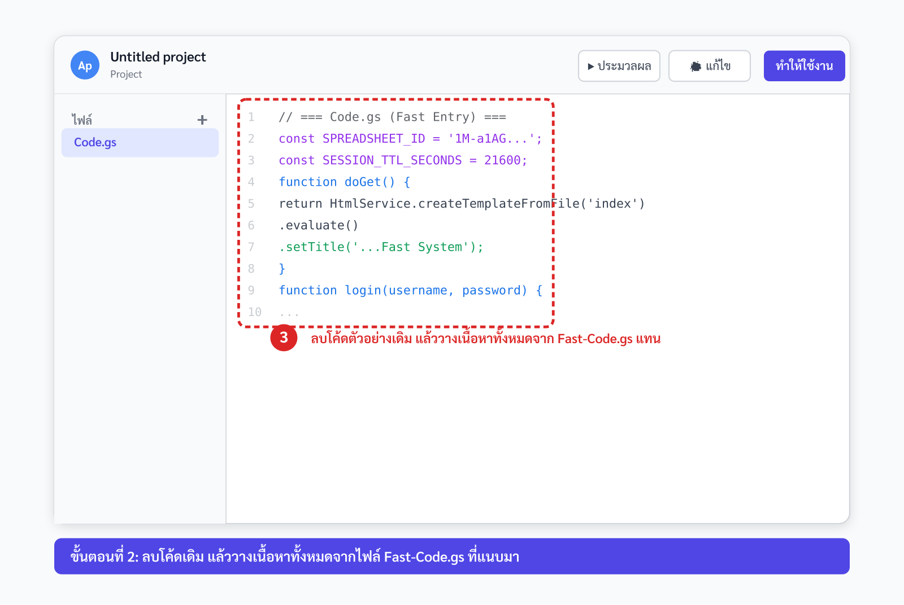
กดเครื่องหมาย + ข้างคำว่า "ไฟล์" ทางซ้ายมือ แล้วเลือก HTML
ตั้งชื่อไฟล์ว่า index (ห้ามใส่ .html ต่อท้ายเอง) แล้วกด Enter
ลบโค้ดตัวอย่างเดิมออก แล้ววางเนื้อหาทั้งหมดจากไฟล์ Fast-index.html ที่แนบมาแทน
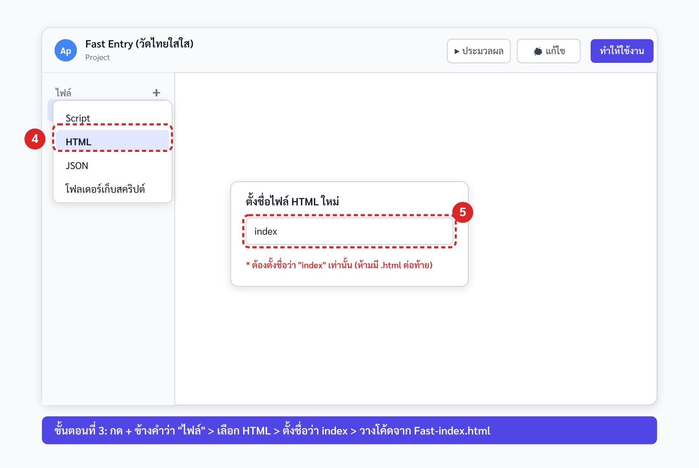
ชื่อไฟล์ต้องเป็น index เป๊ะๆ เหมือนระบบหลัก เพราะโค้ดฝั่ง Code.gs อ้างอิงชื่อไฟล์นี้ตรงๆ
เปิดไฟล์ Code.gs ของระบบหลัก (โปรเจกต์เดิม) ดูค่าบรรทัด const SPREADSHEET_ID
คัดลอกค่านั้นมาวางแทนที่ค่าตัวอย่างในไฟล์ Fast-Code.gs (โปรเจกต์ใหม่) บรรทัดเดียวกัน ให้ตรงกันเป๊ะๆ ทุกตัวอักษร
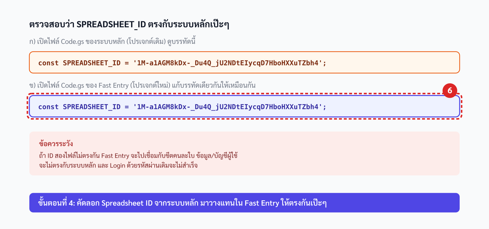
ถ้า ID สองไฟล์ไม่ตรงกัน Fast Entry จะไปเชื่อมกับชีตคนละใบ ข้อมูลและบัญชีผู้ใช้จะไม่ตรงกับระบบหลัก และ Login ด้วยรหัสผ่านเดิมจะไม่สำเร็จเลย
บันทึกโค้ดทั้งสองไฟล์ด้วย Ctrl+S ก่อน แล้วกดปุ่ม "ทำให้ใช้งาน" มุมขวาบน เลือก "ทำให้ใช้งานใหม่"
กดไอคอนเฟือง เลือกประเภทเป็น เว็บแอป
ตั้งค่า Execute as เป็น ฉัน และ Who has access เป็น ทุกคน แล้วกด ทำให้ใช้งาน
หากมีหน้าต่างขอสิทธิ์ยืนยันตัวตนขึ้นมา (แอปยังไม่ได้รับการยืนยันจาก Google) ให้กด Advanced > ไปที่ [ชื่อโปรเจกต์] (ไม่ปลอดภัย) > Allow เหมือนตอนติดตั้งระบบหลัก
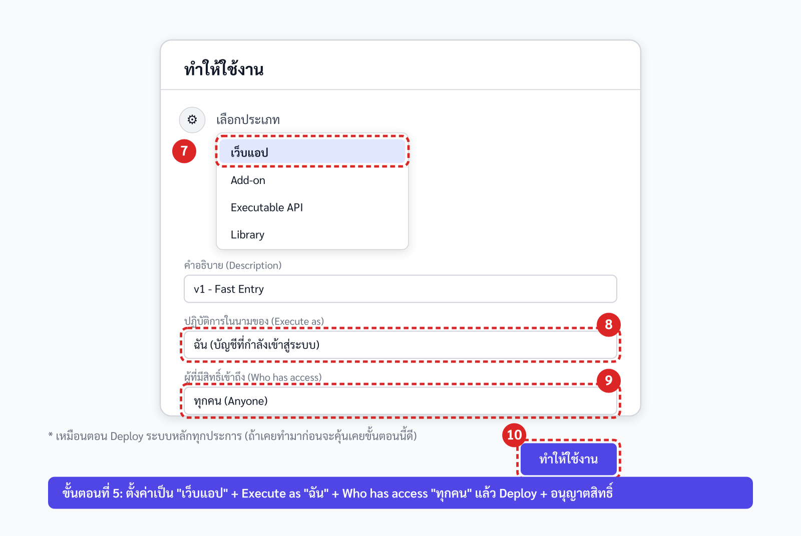
คัดลอก URL ของเว็บแอปที่ได้ เก็บไว้ในที่หาง่าย
แนะนำ: เปิดลิงก์นี้บนมือถือ แล้วเลือก "เพิ่มไปยังหน้าจอหลัก" (Add to Home Screen) จากเมนูเบราว์เซอร์ เพื่อให้เปิดใช้งานได้เหมือนแอปทั่วไป
ทดสอบเข้าสู่ระบบด้วย Username/Password ชุดเดียวกับที่ใช้อยู่ในระบบหลัก — ไม่ต้องสร้างบัญชีใหม่ ไม่ต้องรันฟังก์ชัน setup ใดๆ เพราะข้อมูลมีอยู่แล้ว
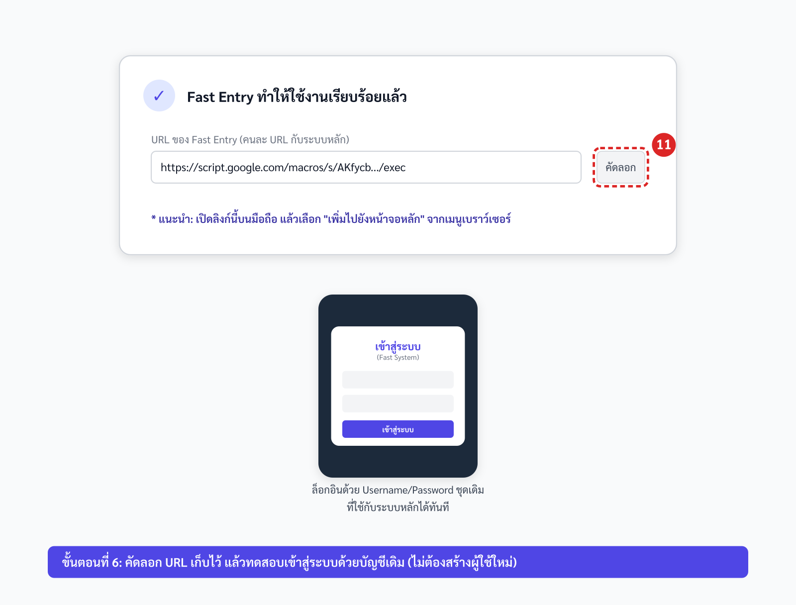
ถึงขั้นตอนนี้ถือว่าติดตั้งเสร็จสมบูรณ์แล้ว! ลองบันทึกรายการทดสอบดูสักรายการ แล้วเปิดระบบหลักเช็กว่าเห็นรายการเดียวกันหรือไม่ เพื่อยืนยันว่าเชื่อมฐานข้อมูลถูกต้อง
ถาม: ล็อกอิน Fast Entry ไม่ได้ ทั้งที่รหัสผ่านนี้ใช้กับระบบหลักได้ปกติ?
ตอบ: สาเหตุที่พบบ่อยที่สุดคือ Spreadsheet ID ของ Fast Entry ยังไม่ตรงกับระบบหลัก (ขั้นตอนที่ 4) ทำให้ไปเชื่อมกับชีตคนละใบ
ตรวจสอบ SPREADSHEET_ID ในไฟล์ Fast-Code.gs อีกครั้งว่าตรงกับระบบหลักเป๊ะๆ แล้ว Deploy เวอร์ชันใหม่ (ทำให้ใช้งาน > จัดการทำให้ใช้งาน > แก้ไข > New version)
ถาม: บันทึกรายการผ่าน Fast Entry แล้ว ทำไมเปิดระบบหลักไม่เห็นรายการนั้น?
ตอบ: ลองกดรีเฟรชหน้าระบบหลัก หรือสลับเดือนไปมาเพื่อโหลดข้อมูลใหม่ — ทั้งสองระบบอ่านจากชีตเดียวกัน ควรเห็นตรงกันทันทีถ้า Spreadsheet ID ถูกต้อง
ถ้ายังไม่เห็น ให้ตรวจสอบ Spreadsheet ID อีกครั้งตามคำถามก่อนหน้า
ถาม: แก้โค้ดแล้ว แต่เปิดเว็บแอปแล้วยังเหมือนเดิม?
ตอบ: ต้อง Deploy เวอร์ชันใหม่ทุกครั้งหลังแก้โค้ด เหมือนกับระบบหลัก — กด ทำให้ใช้งาน > จัดการทำให้ใช้งาน > ไอคอนดินสอ > เปลี่ยน Version เป็น New version > Deploy
ถาม: ต้องรันฟังก์ชัน setup_ เหมือนตอนติดตั้งระบบหลักไหม?
ตอบ: ไม่ต้อง Fast Entry ไม่มีฟังก์ชัน setup เพราะใช้ฐานข้อมูลเดียวกับระบบหลักที่ตั้งค่าไว้แล้ว ติดตั้งเสร็จแล้วใช้งานได้ทันที
ถาม: ใช้ Fast Entry แทนระบบหลักได้เลยไหม ไม่ต้องเปิดระบบหลักอีก?
ตอบ: ไม่แนะนำ Fast Entry ออกแบบมาสำหรับบันทึกรายการด่วนบนมือถือเท่านั้น งานสำคัญอื่นๆ เช่น อนุมัติ/ตีกลับรายการ พิมพ์รายงาน ตั้งค่าระบบ จัดการผู้ใช้งานแบบเต็มรูปแบบ ยังต้องทำผ่านระบบหลัก — รายละเอียดอยู่ในคู่มือการใช้งาน Fast Entry
Spreadsheet ID ที่ใช้: ______________________________________________
URL ของ Fast Entry: ______________________________________________
วันที่ติดตั้ง: ______________________________________________